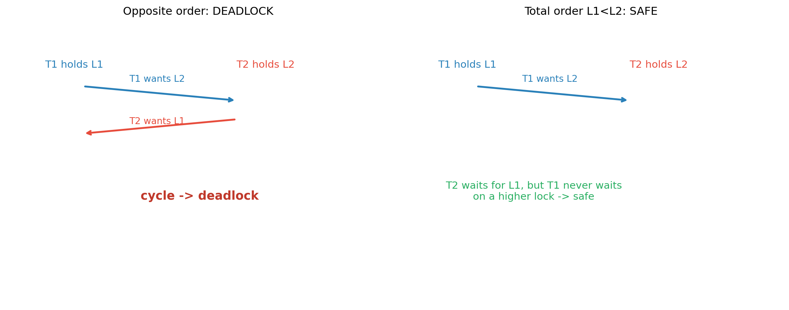

sequenceDiagram
participant T1 as Thread 1
participant M as Memory: counter=0
participant T2 as Thread 2
T1->>M: load counter -> reg=0
Note over T1,T2: context switch
T2->>M: load counter -> reg=0
T2->>M: store reg+1 = 1
Note over T1,T2: context switch
T1->>M: store reg+1 = 1
Note over M: two increments, counter=1 (lost update!)
Operating Systems: Three Easy Pieces, Part 3 — Concurrency
Threads and the thread API, locks and their hardware foundations, locked data structures, condition variables, semaphores, concurrency bugs and deadlock, and event-based concurrency — following OSTEP, Chapters 25–34
Computer Science
Operating Systems
Concurrency
Threads
Synchronization
Systems Programming
A first-principles treatment of concurrency following Operating Systems: Three Easy Pieces. It covers threads versus processes and the race-condition problem, the pthread thread API, locks with their hardware foundations (test-and-set, compare-and-swap, load-linked/store-conditional, ticket locks, and queue-based locks), locked data structures (counters, lists, queues, hash tables), condition variables and the producer/consumer pattern, semaphores as locks, ordering, condition variables, reader-writer locks, and the dining philosophers, concurrency bugs including atomicity and order violations and deadlock with its four conditions and prevention strategies, and event-based concurrency with event loops and non-blocking I/O, with an executable Python laboratory that demonstrates race conditions, locked and unlocked counters, semaphore producer/consumer, and a deadlock detector.
Concurrency is the third great concern of an operating system: many things happening at once, inside a program and across programs. Its difficulty is that the scheduler can interleave operations in ways the programmer did not anticipate — and the failures are non-deterministic.
This is Part 3 of a three-part series following Operating Systems: Three Easy Pieces (OSTEP). See Part 1 for CPU virtualization and Part 2 for memory virtualization. Here we cover concurrency: Chapters 25–34.
TipThe Series
- Part 1 — CPU Virtualization
- Part 2 — Memory Virtualization
- Part 3 — Concurrency (this article)
0.1 Companion Reading
1 Threads and the Concurrency Problem
A thread is like a process but shares its address space with other threads in the same process. Each thread has its own program counter, registers, and stack, but all threads see the same code, heap, and globals.
| Resource | Process | Thread |
|---|---|---|
| Address space | private | shared with sibling threads |
| Registers / PC | private | private |
| Stack | private | private |
| Open files | shared (per process) | shared |
| Context-switch cost | high (address-space change) | lower (same address space) |
Threads are used for two reasons: parallelism (do work simultaneously on multiple CPUs) and overlapping I/O (one thread waits on a slow operation while another makes progress).
1.1 The Fundamental Problem
The OS scheduler can switch threads at any time. Consider two threads each incrementing a shared counter:
counter++; // compiles to: load counter, add 1, store counterIf the scheduler switches between the load and the store, an update is lost. This is a race condition: the result depends on timing. The region of code that must not be interleaved is a critical section, and the property we want is mutual exclusion — at most one thread inside the critical section at a time.
The essence: indeterminate scheduling plus non-atomic read-modify-write equals incorrectness.
2 The Thread API
The POSIX threads (pthread) API is the portable foundation:
| Function | Purpose |
|---|---|
pthread_create |
start a new thread |
pthread_join |
wait for a thread to finish |
pthread_mutex_lock / _unlock |
mutual exclusion |
pthread_cond_wait / _signal / _broadcast |
condition variables |
pthread_t t;
pthread_create(&t, NULL, worker, arg); // (handle, attrs, function, argument)
pthread_join(t, &retval); // wait and collect the return valuePitfalls OSTEP warns about:
- Passing a stack argument by pointer to a new thread — the variable may go out of scope before the thread reads it.
- Ignoring return values from
create/join/lock— errors then surface much later. - Returning a pointer to a local from a thread function.
- Using locks and condition variables correctly — the API cannot enforce discipline; only the programmer can.
3 Locks
A lock is the basic tool for mutual exclusion. Requirements:
- Mutual exclusion — correctness, non-negotiable.
- Fairness / no starvation — every waiting thread eventually gets in.
- Performance — low overhead when uncontended and when contended.
3.1 Building a Lock from Hardware
A lock cannot be built from ordinary loads and stores, because the same interleaving problem applies. Hardware provides atomic primitives:
- Test-and-set and compare-and-swap (CAS): atomically read a value and set/compare it.
- Load-linked / store-conditional (LL/SC): load a location, then store only if no intervening write occurred.
The classic test-and-set spinlock repeatedly attempts an atomic test-and-set until it acquires the lock. It is correct but spins wastefully and offers no fairness. Improvements:
- Ticket lock — take a ticket on entry and wait for the counter to reach it: fair and FIFO, still spin-based.
- Yield / sleep — on failure, yield the CPU or block on a queue rather than burn a core.
- Queue-based locks (MCS, CLH) — each waiter waits on its own flag, so a release wakes exactly one waiter, avoiding the thundering herd and cache-line contention.
The two-phase approach is common: spin briefly (cheap if the lock is about to free), then block. Linux futexes implement exactly this in the kernel.
4 Locked Data Structures
Once locks exist, standard structures can be made thread-safe:
- Counter: a single lock around the increment. For extreme contention, approximate counters give each CPU a local counter and combine them on read — trading exactness for scalability.
- Linked list: a single lock for the whole list is simple and correct; hand-over-hand locking locks each node as it traverses, allowing more concurrency at the cost of complexity and lock overhead.
- Queue: separate head and tail locks let enqueue and dequeue proceed in parallel (used in the famous “two-lock queue”).
- Hash table: one lock per bucket instead of one lock for the table, so operations on different buckets proceed concurrently.
The recurring design lesson: more granular locking means more concurrency and more complexity — including new deadlock risks, since lock ordering now matters (see below).
5 Condition Variables
A lock ensures mutual exclusion, but sometimes a thread must wait for a condition (e.g., a buffer is non-empty). Naive spinning is wasteful; a condition variable lets a thread sleep until signaled.
wait(cond, lock)— atomically release the lock and sleep; on wake, re-acquire the lock.signal(cond)— wake one waiter.broadcast(cond)— wake all waiters.
The producer/consumer pattern is the canonical example:
// consumer
pthread_mutex_lock(&m);
while (count == 0) // MUST be `while`, not `if`
pthread_cond_wait(&cond, &m); // re-checks after wake
// consume item
pthread_cond_signal(&cond);
pthread_mutex_unlock(&m);The while is essential because of spurious wakeups and scheduler interleaving: a woken thread may find the condition false again and must go back to sleep. With two conditions (buffer not full for producers, not empty for consumers) you avoid waking the wrong group — a classic “covering condition vs separate conditions” trade-off.
6 Semaphores
A semaphore (Dijkstra’s sem) is an integer with atomic wait() (P, decrement, block if zero) and post() (V, increment, wake a waiter). A binary semaphore acts as a lock; a counting semaphore controls access to a pool of resources.
Semaphores are remarkably versatile:
- As a lock: initialize to 1;
waitbefore the critical section,postafter. - As ordering: initialize to 0; the waiter calls
wait, the signaler callspost— forcing one event to happen after another. - Producer/consumer: three semaphores —
full,empty, andmutex— elegantly express the bounded buffer:
sem_wait(&empty); // wait for a free slot
sem_wait(&mutex); // enter critical section
buffer[fill] = item; fill = (fill + 1) % MAX;
sem_post(&mutex);
sem_post(&full); // signal a new item- Reader–writer locks: allow many readers or one writer, with fairness tuned via semaphores.
- Dining philosophers: the classic deadlock puzzle — naive per-fork locking deadlocks; fixes include a global lock, ordering forks, or Tanenbaum’s state-based solution.
Reference counting itself can be expressed with semaphores, and condition variables can be built from semaphores (a wait is a semaphore plus a lock).
7 Concurrency Bugs
OSTEP divides bugs into non-deadlock and deadlock classes.
7.1 Non-Deadlock Bugs
- Atomicity violations: two threads interleave a sequence that must be atomic (the lost-update counter). Guard with a lock.
- Order violations: thread A assumes thread B has already run (e.g., initializing a pointer). Guard with a condition variable or a semaphore used for ordering.
7.2 Deadlock
Deadlock occurs when a set of threads each wait for a resource held by another, forming a cycle. The four necessary conditions (Coffman):
- Mutual exclusion — resources are held exclusively.
- Hold-and-wait — a thread holds one resource while waiting for another.
- No preemption — resources cannot be forcibly taken away.
- Circular wait — a cycle exists in the wait-for graph.
Prevention techniques:
- Total ordering — acquire locks in a global order, breaking circular wait (the most practical fix).
- Avoid hold-and-wait — acquire all locks at once.
- Allow preemption — use
trylockand back off. - Detection and recovery — build a wait-for graph, detect cycles, and abort a victim.
flowchart LR
T1["Thread 1<br/>holds L1"] -->|"wants L2"| T2["Thread 2<br/>holds L2"]
T2 -->|"wants L1"| T1
T1 -.->|"cycle = deadlock"| T2
8 Event-Based Concurrency
An alternative to threads is the event loop: a single thread processes events from a queue, never blocking on I/O.
while (1) {
events = select(all_fds); // or poll / epoll
for (e in events) handle(e);
}This avoids many synchronization problems (there is only one thread) and scales well to thousands of connections — the architecture behind Node.js, nginx, and Redis.
Its challenges:
- Blocking system calls stall the whole loop; you must use non-blocking I/O and async I/O (e.g.,
aio,io_uring). - State management must be explicit (a state machine per connection) because there is no per-connection stack.
- Multiple CPUs require running several event loops (or processes), reintroducing the need for synchronization between them.
Threads vs event loops is a genuine trade-off: threads are easier to program sequentially but cost memory (stacks) and synchronization; event loops are efficient but demand state machines and careful non-blocking discipline.
9 Laboratory: Races, Locks, Semaphores, and Deadlock
9.1 The Race, Deterministically
Real timing makes races unreliable to demonstrate, so we first simulate the load-add-store interleaving deterministically to show the lost update — then run real threads with a forced yield.
Code
def run_counter(iters, threads=2):
"""Simulate load/add/store micro-ops, switching threads after every op."""
ops = [["load", "add", "store"]] * threads
pc = [0] * threads
reg = [0] * threads
counter = 0
step = 0
while any(pc[i] < iters * 3 for i in range(threads)):
i = step % threads
if pc[i] < iters * 3:
op = ops[i][pc[i] % 3]
if op == "load":
reg[i] = counter
elif op == "add":
reg[i] += 1
else:
counter = reg[i]
pc[i] += 1
step += 1
return counter
for it in [1, 2, 3, 4]:
racy = run_counter(it)
correct = 2 * it
print(f"iters={it}: interleaved counter={racy} expected={correct} "
f"lost updates={correct - racy}")iters=1: interleaved counter=1 expected=2 lost updates=1
iters=2: interleaved counter=2 expected=4 lost updates=2
iters=3: interleaved counter=3 expected=6 lost updates=3
iters=4: interleaved counter=4 expected=8 lost updates=49.2 The Race, With Real Threads
The real-thread version forces an interleaving by yielding between the load and the store. Then a lock fixes it.
Code
import threading
import sys
import time
sys.setswitchinterval(1e-6)
N = 100_000
# Unlocked: load / (force a scheduling point) / store, so preemption is observable
counter_bad = 0
def bad_worker():
global counter_bad
for _ in range(N):
tmp = counter_bad
time.sleep(0) # yield between load and store -> lost updates
counter_bad = tmp + 1
ts = [threading.Thread(target=bad_worker) for _ in range(2)]
[t.start() for t in ts]; [t.join() for t in ts]
# Locked: correct
counter_good = 0
lock = threading.Lock()
def good_worker():
global counter_good
for _ in range(N):
with lock:
counter_good += 1
ts = [threading.Thread(target=good_worker) for _ in range(2)]
[t.start() for t in ts]; [t.join() for t in ts]
print("=== REAL THREADS: RACE VS LOCK ===")
print(f" expected : {2*N:,}")
print(f" unlocked counter : {counter_bad:,} (lost {2*N - counter_bad:,} updates)")
print(f" locked counter : {counter_good:,} (correct)")
print("\n the locked version is correct because mutual exclusion makes")
print(" the read-modify-write atomic with respect to other threads.")=== REAL THREADS: RACE VS LOCK ===
expected : 200,000
unlocked counter : 100,601 (lost 99,399 updates)
locked counter : 200,000 (correct)
the locked version is correct because mutual exclusion makes
the read-modify-write atomic with respect to other threads.9.3 Producer/Consumer with Semaphores
Code
import threading
BUF = 5
mutex = threading.Semaphore(1)
empty = threading.Semaphore(BUF)
full = threading.Semaphore(0)
buffer, log = [], []
def producer():
for i in range(10):
empty.acquire()
mutex.acquire()
buffer.append(i); log.append(f"P{i:02d}->buf")
mutex.release()
full.release()
def consumer():
for _ in range(10):
full.acquire()
mutex.acquire()
v = buffer.pop(0); log.append(f"C{v:02d}<-buf")
mutex.release()
empty.release()
pt = threading.Thread(target=producer)
ct = threading.Thread(target=consumer)
pt.start(); ct.start(); pt.join(); ct.join()
print("=== SEMAPHORE PRODUCER/CONSUMER ===")
print(" events:", " ".join(log))
print(f" produced 10, consumed 10, buffer empty at end: {buffer == []}")
print(" invariants held: empty + full count the free/filled slots; mutex guards the buffer.")=== SEMAPHORE PRODUCER/CONSUMER ===
events: P00->buf P01->buf P02->buf P03->buf P04->buf C00<-buf C01<-buf C02<-buf C03<-buf C04<-buf P05->buf P06->buf P07->buf P08->buf P09->buf C05<-buf C06<-buf C07<-buf C08<-buf C09<-buf
produced 10, consumed 10, buffer empty at end: True
invariants held: empty + full count the free/filled slots; mutex guards the buffer.9.4 Detecting Deadlock with a Wait-For Graph
Rather than triggering a real (hanging) deadlock, we model lock ownership and requests and detect cycles.
Code
def deadlock_detector(owners, waiters):
"""owners: resource -> thread holding it. waiters: thread -> resource it wants."""
# build wait-for: thread -> threads it waits on
graph = {}
for t, r in waiters.items():
holder = owners.get(r)
if holder is not None and holder != t:
graph.setdefault(t, set()).add(holder)
else:
graph.setdefault(t, set())
# find a cycle (DFS)
WHITE, GRAY, BLACK = 0, 1, 2
color = {t: WHITE for t in graph}
path = {}
cycle = []
def dfs(u):
color[u] = GRAY
for v in graph.get(u, ()):
if color[v] == GRAY:
# reconstruct the cycle from v back to u, then v again
cyc, x = [v], u
while x != v:
cyc.append(x); x = path[x]
cyc.append(v)
cyc.reverse()
cycle.extend(cyc)
return True
if color[v] == WHITE:
path[v] = u
if dfs(v):
return True
color[u] = BLACK
return False
for t in graph:
if color[t] == WHITE and dfs(t):
return cycle
return None
# Scenario 1: ordered acquisition (safe)
print("=== DEADLOCK DETECTION ===")
owners = {"L1": "T1", "L2": "T2"}
waiters = {"T2": "L1", "T1": "L2"} # T1 wants L2 (held by T2), T2 wants L1 (held by T1)
cyc = deadlock_detector(owners, waiters)
print(" scenario A (opposite order):", "DEADLOCK cycle " + " -> ".join(cyc) if cyc else "no deadlock")
owners = {"L1": "T1", "L2": "T1"} # both held by T1; T2 waits, no cycle
waiters = {"T2": "L2", "T1": "L3"}
cyc = deadlock_detector(owners, waiters)
print(" scenario B (one holder): ", "DEADLOCK cycle " + " -> ".join(cyc) if cyc else "no deadlock")
print("\n fix: impose a global lock order; acquire L1 before L2 in every thread.")
print(" then T2 can only wait for a lower-index lock, and no cycle can form.")=== DEADLOCK DETECTION ===
scenario A (opposite order): DEADLOCK cycle T2 -> T1 -> T2
scenario B (one holder): no deadlock
fix: impose a global lock order; acquire L1 before L2 in every thread.
then T2 can only wait for a lower-index lock, and no cycle can form.Code
import matplotlib.pyplot as plt
fig, axes = plt.subplots(1, 2, figsize=(12, 4.8))
for ax, title in zip(axes, ["Opposite order: DEADLOCK", "Total order L1<L2: SAFE"]):
ax.set_xlim(0, 10); ax.set_ylim(0, 6); ax.axis("off")
ax.set_title(title)
ax.text(1, 5, "T1 holds L1", fontsize=11, color="#2980b9")
ax.text(6, 5, "T2 holds L2", fontsize=11, color="#e74c3c")
ax.annotate("", xy=(6, 4.3), xytext=(2, 4.6),
arrowprops=dict(arrowstyle="->", color="#2980b9", lw=2))
ax.text(3.2, 4.7, "T1 wants L2", fontsize=10, color="#2980b9")
if "DEADLOCK" in title:
ax.annotate("", xy=(2, 3.6), xytext=(6, 3.9),
arrowprops=dict(arrowstyle="->", color="#e74c3c", lw=2))
ax.text(3.2, 3.8, "T2 wants L1", fontsize=10, color="#e74c3c")
ax.text(3.5, 2.2, "cycle -> deadlock", fontsize=13, color="#c0392b", fontweight="bold")
else:
ax.text(3.5, 2.2, "T2 waits for L1, but T1 never waits\non a higher lock -> safe",
fontsize=11, color="#27ae60", ha="center")
plt.tight_layout(); plt.show()
The laboratory makes the three pillars of concurrency concrete: mutual exclusion (locks), waiting for conditions (semaphores and condition variables), and avoiding deadlock (ordering and cycle detection). Every one of these ideas recurs in application code, in databases, and in distributed systems.
10 Summary
\[ \begin{aligned} &\textbf{Threads: } && \text{shared address space, private PC/registers/stack; parallelism and I/O overlap.} \\[3pt] &\textbf{Race: } && \text{indeterminate scheduling + non-atomic read-modify-write = lost updates.} \\[3pt] &\textbf{Locks: } && \text{built on test-and-set / CAS / LL-SC; spin, ticket, and queue-based designs.} \\[3pt] &\textbf{Data structures: } && \text{coarse vs fine-grained locking; per-bucket, two-lock queues.} \\[3pt] &\textbf{Condition variables: } && \text{wait/signal/broadcast; always re-check with } while. \\[3pt] &\textbf{Semaphores: } && \text{as lock, ordering, and condition; producer/consumer in three.} \\[3pt] &\textbf{Bugs: } && \text{atomicity and order violations; deadlock's four Coffman conditions.} \\[3pt] &\textbf{Prevention: } && \text{total lock ordering, trylock, no hold-and-wait, detection.} \\[3pt] &\textbf{Events: } && \text{event loops and non-blocking I/O; trade threads for a state machine.} \end{aligned} \]
Across the three easy pieces, the operating system’s job is now clear. It virtualizes the CPU (Part 1) and memory (Part 2), and it must do so while many threads run concurrently (this part). The remaining piece — persistence, and how data survives crashes — is the natural next step in OSTEP.
11 Curated References and Further Reading
- Arpaci-Dusseau, R. & Arpaci-Dusseau, A. (2018). Operating Systems: Three Easy Pieces. (Primary source: Chapters 25–34.) Free at
pages.cs.wisc.edu/~remzi/OSTEP. - Dijkstra, E. W. (1968). Cooperating Sequential Processes. (Semaphores.)
- Hoare, C. A. R. (1974). Monitors: An Operating System Structuring Concept. CACM. (Condition variables.)
- Coffman, E., Elphick, M. & Shoshani, A. (1971). System Deadlocks. ACM Computing Surveys.
- Herlihy, M. & Shavit, N. (2012). The Art of Multiprocessor Programming, 2nd ed. Morgan Kaufmann. (Locks, queues, and progress guarantees.)
- Mellor-Crummey, J. & Scott, M. (1991). Algorithms for Scalable Synchronization on Shared-Memory Multiprocessors. ACM TOCS. (MCS locks.)
- Welsh, M., Culler, D. & Brewer, E. (2001). SEDA: An Architecture for Well-Conditioned, Scalable Internet Services. SOSP. (Event-based concurrency.)
- Linux kernel documentation. futex, io_uring, and the memory model.